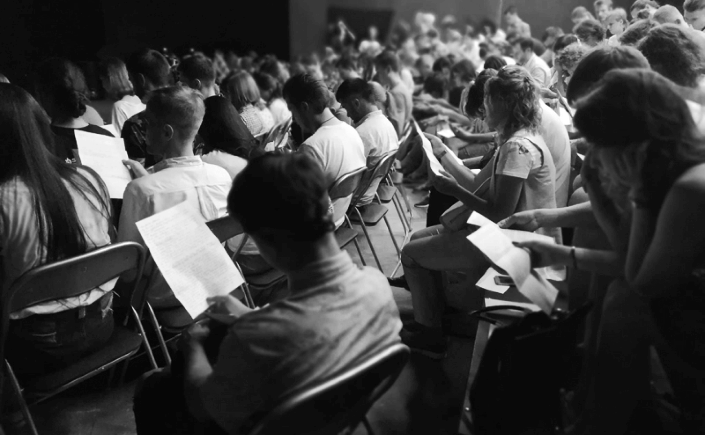

Поддержать
Поддержать
Любимовка.Ещё
Межсезонные читки и обсуждение пьес из списка отмеченных отборщиками Любимовки. Можно слушать, обсуждать и даже участвовать.
О проекте
За первый сезон проекта организаторы провели 17 мероприятий вместе с режиссёрами и актёрами московских театров: Театра.doc, Театрального Центра им. Вс. Мейерхольда, Гоголь-центра, Электротеатра «Станиславский», Ленкома.